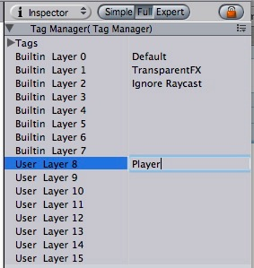
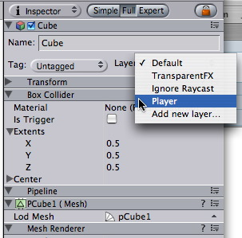
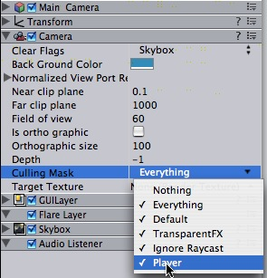

Layers are most commonly used by Cameras to render only a part of the scene, and by Lights to illuminate only parts of the scene. But they can also used by raycasting to selectively ignore colliders.
The first step is to create a new layer, which we can then assign to a game object. To create a new layer, open the Edit menu and select Project Settings -> Tags.
We create a new layer in one of the empty User Layers. We choose layer 8.

Now that you have created a new layer. You have to assign the layer to one of the game objects.

In the tag manager we assigned the Player layer to be in layer 8.
Using the camera's culling mask, you can selectively render objects which are in one particular layer. To do this, select the camera that should selectively render objects.
Modify the culling mask by checking or unchecking layers in the culling mask property.

Using layers you can cast rays and ignore colliders in specific layers. For example you might want to cast a ray only against the player layer and ignore all other colliders.
The Physics.Raycast function takes a bitmask, where each bit determines if a layer will be ignored or not. If all bits in the layerMask are on, we will collide against all colliders. If the layerMask = 0, we will never find any collisions with the ray.
// bit shift the index of the layer to get a bit mask
var layerMask = 1 << 8;
// Does the ray intersect any objects which are in the player layer.
if (Physics.Raycast (transform.position, Vector3.forward, Mathf.Infinity, layer))
print ("The ray hit the player");
In the real world you want to the inverse of that however. We want to cast a ray against all colliders except those in the player layer.
function Update ()
{
// Bit shift the index of the layer (8) to get a bit mask
var layerMask = 1 << 8;
// This would cast rays only against colliders in layer 8.
// But instead we want to collide against everything except layer 8. The ~ operator does this, it inverts a bitmask.
layerMask = ~layerMask;
var hit : RaycastHit;
// Does the ray intersect any objects excluding the player layer
if (Physics.Raycast (transform.position, transform.TransformDirection (Vector3.forward), hit, Mathf.Infinity, layerMask))
{
Debug.DrawRay (transform.position, transform.TransformDirection (Vector3.forward) * hit.distance, Color.yellow);
print ("Did Hit");
}
else
{
Debug.DrawRay (transform.position, transform.TransformDirection (Vector3.forward) *1000, Color.white);
print ("Did not Hit");
}
}
When you don't pass a layerMask to the Raycast function, it will only ignore colliders that use the IgnoreRaycast layer. This is the easiest way to ignore some colliders when casting a ray.
When Rigidbodies fall to rest - a box landing on the floor - they will start sleeping. Sleeping is an optimization which allows the Physics Engine to stop processing those rigidbodies. This way you can have huge amounts of rigidbodies in your scene as long as you make sure that they normally don't move.
Rigidbody sleeping happens completely automatic. Whenever a rigidbody is slower than the the sleepAngularVelocity and sleepVelocity it will start falling asleep, after a few frames of resting it will then be set to sleep. When the body is sleeping, no collision detection or simulation will be performed anymore. This saves a lot of cpu cycles.
Rigidbodies are also automatically awoken when: another rigidbody collides with the sleeping rigidbody another rigidbody connected to through a joint is moving. when modifying a property of the rigidbody when adding forces.
Thus if you want to make rigidbodies fall to rest, don't modify their properties or add forces when they are about to fall to rest.
There are two variables that you can tune to make sure your rigidbodies automatically fall to rest.
Rigidbody.sleepVelocity and Rigidbody.sleepAngularVelocity. Those two variables are initialized to the sleepVelocity and sleepAngularVelocity variable defined in the Physics Manager (Edit -> Project Settings -> Physics).
Rigidbodies can also be forced to sleep using rigidbody.Sleep. This is useful to make rigidbodies already rest when loading a new level.
If you have a sleeping rigidbody and you move a static collider (A collider without a Rigidbody attached) into the rigidbody or pull it from underneath the rigidbody, the sleeping rigidbody will not awake. If you move a Kinematic Rigidbody out from underneath normal Rigidbodies that are at rest on top of it, the sleeping Rigidbodies will "wake up" and be correctly calculated again in the physics update. So if you have a lot of Static Colliders that you want to move around and have different object fall on them correctly, use Kinematic Rigidbody Colliders.
Kinematic rigidbodies - they will not be calculated during the physics update since they are not going anywhere. If you move a Kinematic Rigidbody out from underneath normal Rigidbodies that are at rest on top of it, the sleeping Rigidbodies will "wake up" and be correctly calculated again in the physics update. So if you have a lot of Static Colliders that you want to move around and have different object fall on them correctly, use Kinematic Rigidbody Colliders.